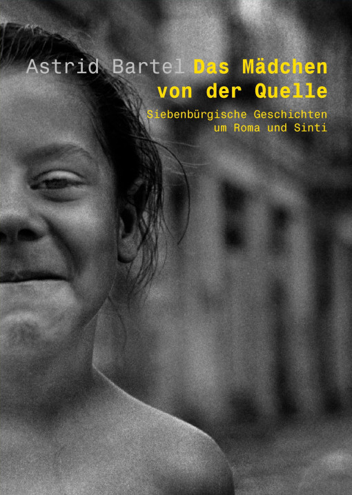

Das Mädchen von der Quelle

Immer wieder kreuzten Zigeuner den Weg der
Erzählerin. Sie wurden zu einem wesentlichen Teil ihres
Lebens: verwirrende, schmerzliche, aber auch bereichernde
Begegnungen. Man war sich zu Anfang völlig fremd. Doch dann
näherte man sich misstrauisch, aber neugierig und stellte
am Ende überrascht fest, wie sehr sich Wünsche und
Vorstellungen ähnelten.
Astrid Bartel erzählt einfache Geschichten mit viel
Heiterkeit und oft mit einer liebenswerten Ironie. Sie hat
ihre Kindheit und Jugend in Hermannstadt / Sibiu in
Rumänien verbracht. Nach einem Germanistik-Studium in Köln
lebt sie nun mit ihrem Mann und vier Söhnen in Berlin. Die
bunten, eindringlichen Erlebnisse der Jugend sind ihr bis
heute unvergessen geblieben.
Astrid Bartel: Das Mädchen von der Quelle
Geschichten um Roma und Sinti
hora-Verlag, Hermannstadt / Sibiu, 2005
162 S., 11 Zeichnungen
ISBN 973-8226-45-7
13.50 €
Bestellmöglichkeiten:
Weiteres über „Das Mädchen von der Quelle”: